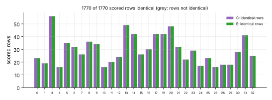
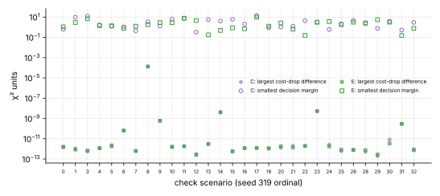
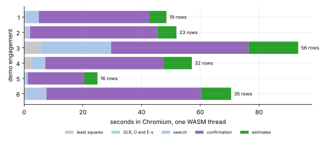

From bearings to estimate with nothing prepared in Python
16 November 2026 · spec 021 · gitma2
About 1,700 lines of Python, ported stage by stage and checked against a dump of every intermediate.

1,770 of 1,770 scored rows; every nomination and every confirmation decision the same as Python's.

Cost drops agree to 5.4 × 10⁻⁹ on 29 scenarios and 1.3 × 10⁻⁴ on one; the closest decision is 0.152 from its threshold. Intermediates do differ: one row's least squares lands elsewhere (ordinal 22), cost tables by up to 22%, and the GLR statistic crosses its alarm threshold at one row of ordinal 1 without changing a nomination.

25 to 93 s per engagement on one thread; segmentation identical to Python's on 181 of 181 rows; estimates within 2.7 × 10⁻⁶ of the shipped ones.
Page: /gitma2/viewer · record: experiments/20261116-port/ · spec: specs/021-browser-segmenter/